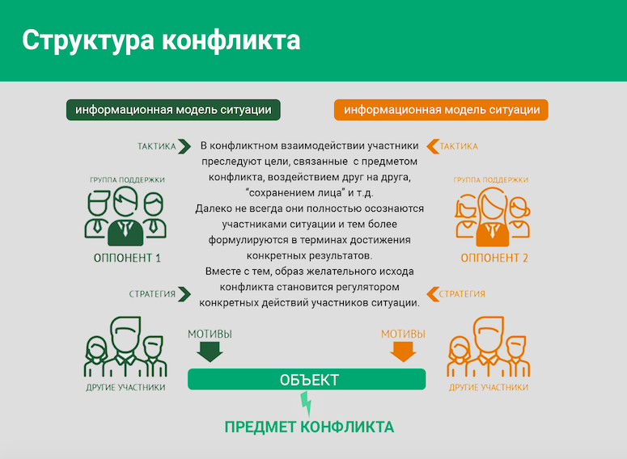

Причины и функции конфликта. Структура конфликта

Мы продолжаем знакомство с темой конфликтов. В прошлый раз мы разобрались с историей возникновения понятия «конфликт» и с тем, в чем смысл конфликта, почему без него невозможна жизнь, действия и взросление. Сегодня мы на этой основе дадим понятие этому термину. Затем разберемся с тем, какие конфликты бывают и какова их структура.
У понятия «конфликт» нет одного определения: у представителей разных наук и направлений оно своё. Определение конфликта может меняться, например, в зависимости от вида конфликта. Но мы с вами остановимся на двух самых популярных, из которых выберем одно.
Первое определение достаточно общее, оно звучит так:
Конфликт — столкновение сторон, мнений, сил.
При таком подходе конфликты возможны и в неживой природе. Вспомним, что писали античные философы.
Второе определение звучит так:
Конфликт — столкновение противоположно направленных целей, интересов, позиций, мнений и взглядов оппонентов или субъектов взаимодействия.
Здесь мы ограничиваем конфликт только группой людей. Действительно, если мы говорим о столкновении сил, то это может быть, например, столкновение двух разнонаправленных массивов воздуха, которые образуют циклоны, антициклоны — это тоже будет конфликт. Но если мы говорим о столкновении интересов, позиции, мнений, взглядов оппонентов, то здесь мы будем ограничиваться только кругом людей.
Исходя из этого, как наиболее точное, на мой взгляд, можно использовать такое определение.
Конфликт — это наиболее острый способ разрешения значимых противоречий, возникающих в процессе взаимодействия, заключающийся в противодействии субъектов конфликта и обычно сопровождающийся негативными эмоциями.
Почему мне нравится это определение? Почему я его рекомендую? На мой взгляд, оно наиболее полное и при этом практико-ориентированное. В нем отражено всё основное, что нам нужно знать про конфликт.
Во-первых, конфликт называют острым способом разрешения значимых противоречий. Действительно, если у нас есть противоречия, которые мы готовы мирно и спокойно обсудить, и при этом никакие наши потребности жестко не фрустрированы, то конфликта не будет или он останется на латентной стадии.
Конечно, основа конфликта — это разрешение значимых противоречий. Если бы их не было, то не было бы и конфликта. Важный момент: противоречия возникают в процессе взаимодействия, то есть здесь мы говорим не о внутриличностном, а скорее о межличностном конфликте. Такой конфликт рождается только тогда, когда мы вступаем во взаимодействие с социумом. Действительно, мы растем в этом взаимодействии, и часто именно этим свойством описывается уровень взросления личности. Конечно, именно во взаимодействии с социумом мы испытываем большую часть фрустраций — неудовлетворенных потребностей, и здесь возникает конфликт.
Важно, что конфликт — не всегда следствие взаимодействия. Иногда взаимодействие бывает очень даже приятным. Конфликт возникает, когда есть противодействие субъектов конфликта. И это тоже необходимая составляющая. Если два человека во всем согласны, конфликта не будет.
И наконец, еще один важный момент: то, о чем люди думают в первую очередь, когда вспоминают о конфликте — конфликт сопровождается негативными эмоциями.
Какие же условия нам необходимы для возникновения конфликта? Как правило, это наличие у субъектов социального взаимодействия 1) противоположно направленных мнений, мотивов, суждений и 2) состояния противоборства. Важны оба компонента, потом что люди могут иметь разное мнение по какому-то вопросу и не конфликтовать на эту тему. Есть фраза: «О вкусах не спорят», кому-то нравится красный цвет, кому-то синий, а кому-то зеленый. И если эти люди не используют эти цвета в каком-то общем проекте, где каждый настаивает на своем, то конфликта не будет. Но если вдруг представить, что три человека с разными вкусами работают над одним дизайнерским проектом, то тогда возможна ситуация противоборства, когда каждый будет продвигать свое противоположно направленное мнение или суждение.
Если субъекты конфликта противодействуют, но не переживают при этом негативных эмоций или переживают, но внешне их не проявляют, то такие ситуации называют предконфликтными.
Пример. Двое друзей могут друг над другом подтрунивать по каким-то причинам, в силу каких-то обстоятельств или знаний, которые они имеют друг о друге. Это такой легкий сарказм, юмор, часто это привычная форма общения, которая не будет явным конфликтом. Внешне конфликт как будто присутствует, но по факту оба не испытывают негативных эмоций. Таким же часто является конфликт в паре, когда на самом деле истинные противоречия уже давно проговорены, но, тем не менее, иногда супруги немножко разряжают обстановку тем, что выносят какие-то как бы конфликтные ситуации в вербальную форму. Обычно они при этом не испытывают серьезных негативных эмоций, конфликт происходит скорее в юмористическом варианте, и оба ощущают, в первую очередь, удовлетворение, а затем что-то иное. Но это хождение по тонкому льду — какое-то неточное или жестко сказанное слово может привести к настоящему конфликту. Поэтому такой период все же называется периодом конфликта, но в предконфликтной фазе.
Или другой вариант, когда люди ведут себя пассивно-агрессивно, то есть внешне они не проявляют своей конфликтной настроенности по отношению к оппоненту, но внутренне ведут с ним довольно яркий агрессивный диалог. Это часто бывает, например, когда начальник отчитывает подчиненного на собрании, подчиненный ничего возразить вслух не может, но внутри он ведет диалог с начальником, обзывая его и всячески ставя на место. После совещания он идет и проговаривает это сам с собой либо с какими-то доверенными лицами. Таким образом, явного конфликта между начальником и подчиненным нет, но конфликтные негативные чувства присутствуют. Эта фаза тоже может быть латентной или предконфликтной.
Где мы можем наблюдать конфликты? В трех вариантах: в общении, поведении и совместной деятельности. В общении в вербальной форме, в совместной деятельности не только в вербальной, но и в форме каких-то действий, которые мы выполняем. И, наконец, в поведении, когда мы, например, наблюдаем поведение другого человека, которое фрустрирует нашу потребность, вызывая желание конфликтовать.
Типы конфликтов
Выделяют три типа конфликтов.
Тип 1. Внутриличностные конфликты. Это конфликты у человека внутри себя, внутри своей головы, как мы говорим. Это те конфликты, для которых не нужен другой. У человека внутри этот другой уже существует. Порой один голос внутри нас говорит: «делай так», а другой: «делай так» — это субличности или интроекты, которые существуют у каждого и которые иногда конфликтуют, не могут договориться при принятии того или иного решения.
Тип 2. Социальные конфликты. О них мы вспоминаем в первую очередь, когда говорим о конфликтах. Социальные конфликты бывают разных типов: это межличностные конфликты, или конфликты типа «личность-личность» или «личность-группа». Это конфликты типа «группа-группа» — конфликты между малыми, средними и большими социальными группами. И наконец, самые крупные конфликты — международные — между отдельными государствами и их коалициями.
Тип 3. Зооконфликты. Это те конфликты, которые встречаются в животном мире. Об этих конфликта мы можем узнать много увлекательного из фильмов различных исследователей. Они, как и внутриличностные конфликты, не являются темой нашего курса. Мы с вами сосредоточимся на социальных конфликтах.
Итак, объектом комплексного изучения конфликтологии являются конфликты в целом, а предметом — общие закономерности их возникновения, развития и завершения. Мы определили с вами, что такое конфликт, какие бывают виды конфликта и причины его возникновения. Теперь давайте отметим, что же входит в проблемное поле конфликта. Четыре составляющие: структура конфликта, динамика конфликта, типовые способы разрешения конфликта или управления им и типология конфликтов. Будем рассматривать их по порядку.
Структура конфликта
Чтобы знать, как лучше разрешать конфликты, нужно очень точно понимать, что конфликт собой представляет. Понимание структуры позволит вам хорошо регулировать ваши действия внутри нее и согласно этой динамике. Итак, что же входит в структуру конфликта, давайте вначале перечислим составляющие.
1. Предмет конфликта. Если бы не было этого препятствия — предмета конфликта, то собственно, и конфликта бы не существовало.
2. Участники конфликта. Обязательно необходимы участники, что очевидно.
3. Информационная модель ситуации. Обязательно у каждого участника есть информационная модель ситуации. Об этом я подробно расскажу и покажу на схеме.
4. Группы поддержки. Конфликт происходит не в вакууме, а в социальной среде, то есть в определенных условиях. На эти условия влияют и группы поддержки, которые есть у каждого участника конфликта. Всё это приводит к определенным действиям и, конечно, к исходу конфликта.
Давайте рассмотрим, как это выглядит на схеме.

В первую очередь наше внимание приковывает объект. Объект, или предмет конфликта, который является частью объекта, — это то, за что идет борьба. Его наличие очевидно. Наличие кого еще очевидно и важно? Конечно, оппонентов. Закрашенные темным фигурки: оппонент 1 и оппонент 2. Здесь они представлены мужской и женской фигурами, хотя это не всегда так. Оппоненты — это просто два человека, у которых есть разнонаправленные противоборствующие интересы по поводу объекта и предмета конфликта, и которые находятся в состоянии противоборства. Иначе это было бы предконфликтной ситуацией.
К сожалению, часто люди привыкли думать, что на этом конфликт заканчивается. Есть два человека и есть, собственно, предмет конфликта и всё. Но важно понимать, как устроен конфликт. У каждого из участников: оппонента 1 и оппонента 2, есть то, что в заголовках над ними называется информационной моделью ситуации.
Это о чем? Например, о том, что конфликт развода по-женски и по-мужски выглядит по-разному. И когда мы пытаемся обсудить ситуацию с оппонентами, порой возникает ощущение, что люди рассказывают о совершенно разных ситуациях. Каждый видит проблему по-своему. Это про то, что у каждого есть свои очки, свой угол зрения на то, что происходит, то есть своя информационная модель ситуации или информационная модель конфликта.
По опыту скажу, что большую часть конфликтов удается урегулировать, когда участник понимает, какова информационная модель конфликта у его оппонента, и наоборот. Часто конфликт возникает по недопониманию реалий, из которых человек предпринимает те или иные действия. Поскольку у нас недостаточно знаний об оппоненте и его информационной модели, мы склонны проецировать на него или приписывать ему какие-то часто несуществующие мотивы его действий. И дальше уже конфликтуем не с самим оппонентом, а с этими мотивами.
Например, сотрудник обиделся, что руководитель не включил его в список тех, кому полагается премия. Хотя он был отмечен руководителем, получил устную похвалу и ожидал, что имеет право рассчитывать на эту премию к празднику. И вдруг не видит себя в списке. Возникает конфликт. Информационная модель этого конфликта у работника такова: руководитель меня обесценил, плохо ко мне относится, верить ему нельзя и надо думать о переходе в другую компанию, где ко мне будут лучше относиться.
Если вдруг этот конфликт разовьется, и мы посмотрим информационную модель руководителя, то она будет такая: руководитель обозначил своему референту список тех, кому необходимо выдать премию, а референт пропустил фамилию. И на самом деле никакого злого умысла в поведении руководителя не было, фамилия работника должна была быть в списке. Если бы работник пришел с заявлением об уходе, то информационная модель конфликта у руководителя могла бы быть такая: наверное у него что-то случилось, или он не ценит мои действия и поэтому я подпишу заявление. Но если бы каждый из оппонентов уточнил информационную модель другого, то это недоразумение разрешилось бы очень быстро. Работник получил премию, а руководитель не лишился бы хорошего сотрудника. Понятно, что ни у одного, ни у другого не было реального злого умысла, повод конфликта оказался надуманным, искусственным. Это про то, как важно понимать обстоятельства, которые могут руководить действиями вашего оппонента.
Помимо информационной модели конфликта у нас есть еще несколько важных моментов. Повторюсь, что конфликт не проходит в вакууме, то есть у него есть определенные условия. Например, если конфликт проходит дома, то мы выясняем отношения одним способом. Если в офисе, то другим. Например, когда директор крупной компании вызывает работника на ковер, то, наверное, там он будет конфликтовать другим способом, нежели дома. Условия диктуют многое. Опять же, в разных компаниях существуют разные правила поведения и коммуникации.
Что еще важно? Другое важное качество предлагаемых обстоятельств конфликта — это наличие групп поддержки и других участников. Их влияние может, казалось бы, помочь разрешению конфликта, но, как правило, происходит по-другому. Конфликт разрешается гораздо быстрее, если в нем не принимают участия другие люди. Единственный плюс таких групп поддержки: если они состоят из людей, которые могут просто выслушать и принять, но ничего не советовать, но такое, к сожалению, встречается редко. Либо если в группах поддержки присутствуют профессиональные медиаторы или психологи, то есть специалисты, которые умеют обходиться с тканью конфликта. В других случаях группы поддержки скорее усиливают конфликт.
Давайте возьмем классическую ситуацию. Она будет не из бизнес-среды, а из среды семейной: возьмем ситуацию ссоры мужа и жены. Что происходит? Если вдруг теща (или свекровь) становится на сторону одного или другого, то конфликт приобретает вселенские масштабы. На самом деле два человека со своим конфликтом разобрались бы гораздо эффективнее и корректнее друг к другу. Но если теща и свекровь не проявляют достаточной мудрости, а начинают давать советы, усиливать агрессию в адрес условного оппонента, начинают, как мы говорим в обиходе, «капать на мозги», подрывать авторитет оппонента в глазах мужа или жены, то конфликт может эскалироваться многократно.
На самом деле, в такой ситуации конфликт будет не средством для роста семьи, а средством для ее уничтожения. Оптимальный вариант здесь — привлекать к конфликту в качестве групп поддержки только объективных людей, которые работали бы на интересы обеих сторон.
И, наконец, другие участники конфликта — это люди, которые тоже могут способствовать его эскалации. Здесь речь идет об участниках, которые напрямую не связаны с оппонентами, но у них могут быть какие-то свои интересы. Предположим, начальник отчитал подчиненного. Подчиненный вышел в курилку, собрал там своих коллег и, пока курил, ругал своего начальника. Надо же было ему как-то выплеснуть свои эмоции. Он считал, что может этим людям доверять. Его коллега, с которым он общался в этот момент, докурил свою сигарету, пошел на прием к начальнику и рассказал ему о происходящем. Это привело, как вы понимаете, к эскалации конфликта.
Или, например, после такого разговора в отделе, где работал подчиненный, стали распространяться сплетни, появились какие-то группы, коалиции. Кто-то поддерживал начальника, а кто-то подчиненного. И этот небольшой конфликт развился уже в конфликт «личность-группа» или «группа-группа».
Таким образом, исходя из видимой структуры конфликта, нам важно понимать, что в качестве других участников и групп поддержки стоит приглашать только тех, кто может профессионально обойтись с конфликтом. И, конечно же, важно учитывать информационные модели, которые могут существовать у разных участников.
Далее мы разберемся с объективными и субъективными причинами возникновения конфликтов и с их деструктивными и конструктивными функциями. Но это будет уже в следующей части. До встречи.